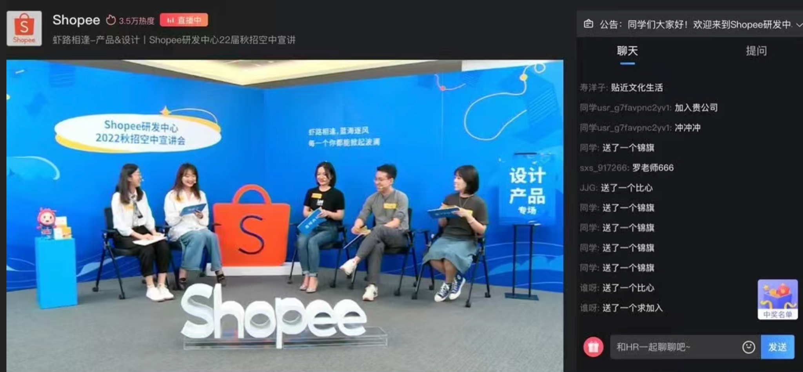

01 / 团队与方法
让新的表现修正第一印象
一次面试中，我认可候选人对细节体验的处理，对他的复杂业务能力仍有疑问，于是留到笔试继续验证。
他主动了解专业背景，为一个问题提出多个方案并比较优劣，还质疑现有功能是否必要，通过简单访谈核实使用情况。原先没看清的能力，在这些具体行为里有了更明确的依据。他能够进入陌生领域，把新信息变成自己的理解，再据此调整方案。
也有相反的情况：面谈初步满意，笔试复核却没有通过。流程表达很熟练，技术背景的理解和方案推导仍不够深入。原来留下的好印象，需要结合后面的表现重新判断。
这两种情况都提醒我，招聘中值得继续追问的，是候选人怎样工作。作品完整、表达流畅、方法名词熟悉，各自说明一部分能力；这些能力怎样进入具体设计，还要继续看。
02 / 团队与方法
把分析和最后的页面放在一起
过去的一份笔试题围绕微服务平台的服务管理页展开。题目提供用户、平台背景和核心概念，要求提交分析、推导与设计方案，涉及服务查找、基础配置、多层部署资源及后续治理能力。
看这类作业时，我会对照分析和页面：是否理解了对象的层级与关系，这些理解有没有影响信息组织和交互，为后续变化留下的空间又在哪里。如果分析说得很完整，页面仍然只是通用模板，就需要继续问中间的推导发生了什么。
已有领域知识、可获得的信息和投入时间，也会影响输出。一次任务能帮助验证具体疑问，不能测出一个人的全部能力。因此，评价要说清楚已经看到了什么、哪些还不能确认，以及这些表现与岗位需要有什么关系。
不同责任范围也需要不同证据。初级角色看基础与学习迁移，资深角色还要能完整负责复杂问题、推进落地。我也区分过 Senior 与 PIC：可靠地完成自己的项目，与协调其他人的工作、处理分歧、持续提供支持，需要观察的内容不同。
03 / 团队与方法
录用以后判断也没有结束
入职后的实际任务，会补充面试时看不到的信息。有的成员更适合稳定产品线，有的理解业务很快但需要提高设计完成度，有的能够独立思考却需要更及时地同步风险。任务安排和指导方式，应当跟着这些表现调整。
带教也给招聘判断提供了回看机会：当初看中的长处，在哪类工作中能够发挥；尚未补足的能力，需要怎样的支持。面试结论不应该成为贴在一个人身上的固定标签。
我也会警惕那些容易影响印象，却不能直接说明工作能力的因素。内向、口音或初次面试紧张，都需要和能否澄清信息、回应分歧、推动协作分开看。
有些人没有被当前岗位选择，在另一类产品或团队里可能更合适。能说明具体缺口，也说明团队当时提供不了什么支持，评价才对双方有用。
2021 年秋招直播 · 面向 2022 届
